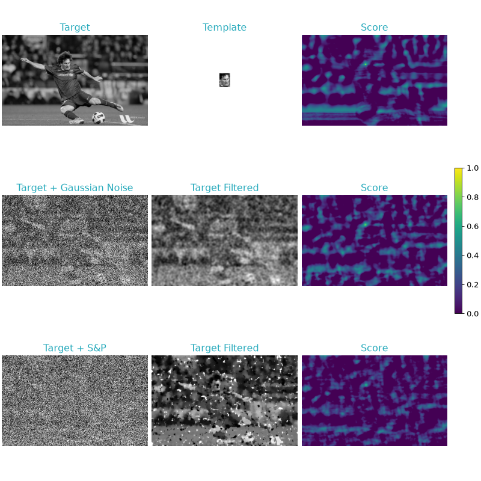
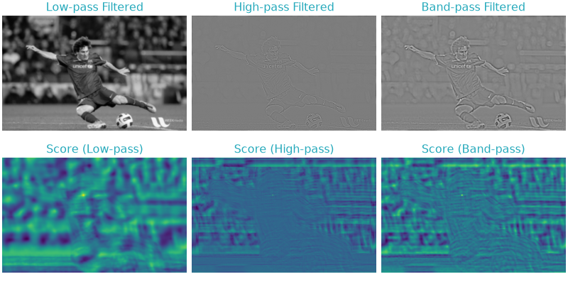
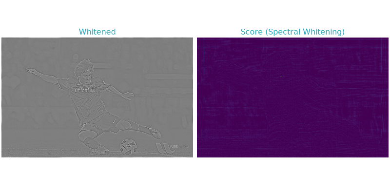
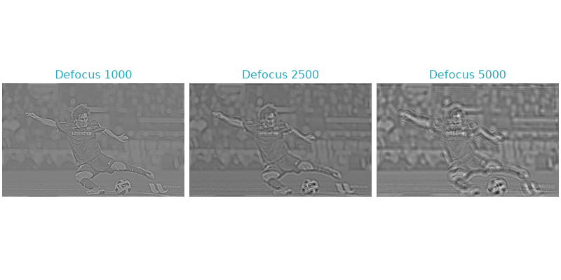
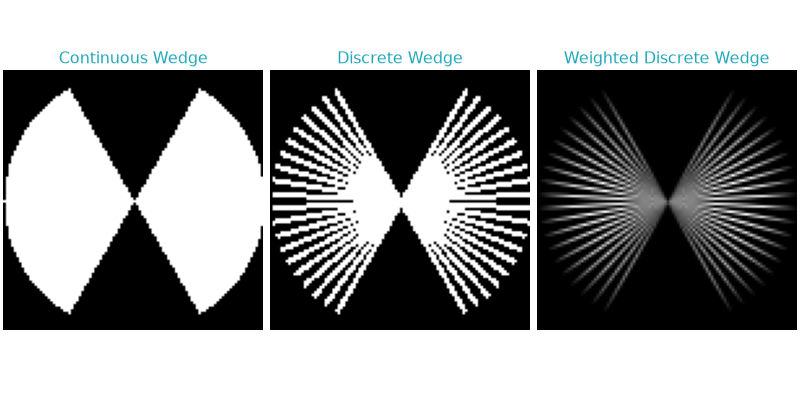

Filtering Techniques#
Filtering is a crucial preprocessing step in template matching, primarily serving to remove noise and to emphasize particular components of the data. The following uses 2D images for illustration, but the principles apply equally to other data modalities.
Noise Removal#
Real-world data often contains noise from various sources, including sensor imperfections and environmental factors. This noise can significantly impact template matching accuracy by obscuring true features or introducing false patterns. Filters are instrumental in mitigating the impact of noise. In thef following, we explore the impact of two types of noise, Gaussian and salt-and-pepper on template matching. We then compare the similarity scores with and without the application of appropriate filters. The template itself remains unchanged.
(Source code, png, hires.png, pdf)
{kind=link}
{kind=link}

Using filters for noise removal.#
The noise in the target obfuscates the features the template is designed to detect, consequently leading to a lower score around the position where the template is expected to match accurately. When applying appropriate filters, the scores around the true positive position are elevated, erroneous peaks are suppressed and template matching performance conclusively elevated.
Note
It’s pivotal to recognize the complexity of noise in images, often a mix of different types. While Gaussian filters are widely used and generally effective, exploring a variety of filters tailored to specific noise types can yield optimal results in noise reduction and template matching accuracy.
This section was inspired by an OpenCV tutorial, which discusses template matching using different variations of the normalized cross-correlation coefficient.
Component Emphasis#
Building on our understanding of noise removal in preprocessing, we now shift our focus to emphasizing specific components within an image. Template matching makes heavy use of the Fourier transform, which maps an image from real space into a spectrum of frequencies, each with a corresponding magnitude and phase, rather than intensities. Lower frequencies correspond to broad features, while higher frequencies represent finer detail and noise. By selectively enhancing or suppressing specific frequency components, we can emphasize desired features or reduce undesirable noise in an image.
Frequency Filter#
Low-pass, high-pass and band-pass filters serve as prototypical modulators of an objects’s frequency components. Low-pass filters allow frequency up to a certain threshold to pass through, effectively smoothing the image by removing finer details and high-frequency noise. High-pass filters do the opposite by allowing only the higher frequencies to pass, thus enhancing fine details. Band-pass filters represent a combination of low and high-pass, allowing a specific range of frequencies to pass.
(Source code, png, hires.png, pdf)
{kind=link}
{kind=link}

Application of Frequency Filters.#
The high-pass and band-pass filtered images exhibit sharp pronounced peaks and an overall reduction in the background scores, while the low-pass filter yields a wide peak. The emphasis on low-frequency information creates a situation in which overall template shape and size rather than structural detail drive the detection [1].
Spectral Whitening#
Spectral whitening normalizes each frequency by dividing the amplitude of each frequency by its magnitude. This can bring out subtle features that might be overshadowed otherwise, but at a risk of amplifying noise. Spectral whitening is graphically explained here [2] [3].
{kind=link}
(Source code, png, hires.png, pdf)
{kind=link}
{kind=link}

Application of Spectral Whitening.#
Spectral Whitening leads to a more similar frequency composition of the template and target, thus reducing bias towards certain frequency ranges. This in turn results in a sharp peak in template matching score around the true positive location and a reduction in background scores compared to the unfiltered template matching scores.
CTF#
The contrast transfer (CTF) function is a mathematical description of the modulation incurred to a specimen when viewed through a microscope. In cryogenic electron microscopy we are often concerned with correction for the CTF, but it can also be used to simulate how a given template would be observed through a microscope. Accounting for the CTF thus improves template matching by increasing the similarity between the template and template instances in the target.
Shown below is how we can use the CTF to inspect an object at different defoci.
(Source code, png, hires.png, pdf)
{kind=link}
{kind=link}

Application of CTF.#
Wedge Masks#
Cryogenic electron tomography is based on the reconstruction of volumes from a set of 2D images obtained at different tilt angles. The number as well as the range of angles that can be sample is finite, due to sample and stage limitations. Therefore, the Fourier space of tomograms is hallmarked by regions of missing information, which is commonly summarized as missing-wedge. Through wedge masks, we can give the same characteristic to the template, thus excluding information-free regions from the matching procedure.
Broadly speaking, pytme distinguishes between continuous, discrete and weighted wedge masks. The later introduces angular-dependent frequency specific weighting and can be done in a variety of ways.
(Source code, png, hires.png, pdf)
{kind=link}
{kind=link}

Application of Wedge Masks.#